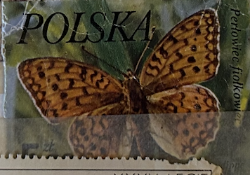
| SOURCE | TITLE| IMAGE MATCH | click to source page |
| eBay | Poland, 1977, Stamp 2349, Butterflies, Fabriciana Adippe, New | eBay | 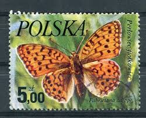 |
| eBay | Nymphalidae, Boloria tritonia amphilochus, male, A1, Russia, RARE L9927 | eBay |  |
| Wikipedia | Dark green fritillary - Wikipedia | 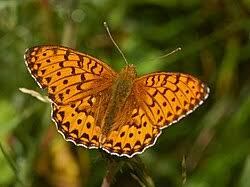 |
| Wikipedia | Boloria epithore - Wikipedia | 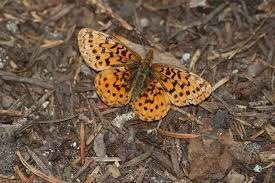 |
| iNaturalist | Mormon Fritillary (Butterflies of Valles Caldera National Preserve) · iNaturalist | 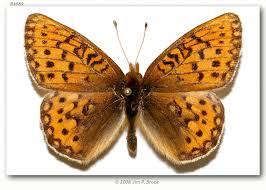 |
| iNaturalist | Niobe fritillary (Crater Lake National Park Pollinator Guide 🐝 🦋) · iNaturalist | 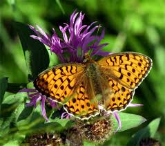 |
| BugGuide.Net | Silver-bordered Fritillary - Boloria selene - BugGuide.Net | 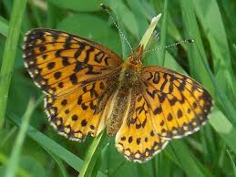 |
| Animalia - Online Animals Encyclopedia | Niobe fritillary - Facts, Diet, Habitat & Pictures on Animalia.bio | 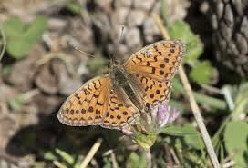 |
| Montana.gov | Northwestern Fritillary - Montana Field Guide | 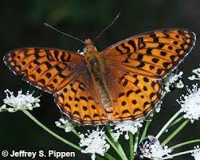 |
| iNaturalist | Shepherd's Fritillary (Boloria pales) · iNaturalist | 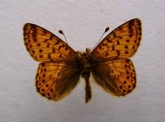 |
| Wikipedia | Brenthis ino - Vicipaedia | 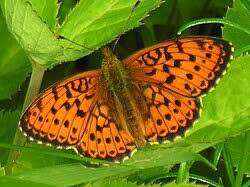 |
| Wikipedia | Перламутровка малинная — Википедия | 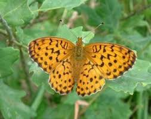 |
| Butterfly Conservation | Forest Haven For Threatened Butterflies | Butterfly Conservation | 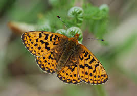 |
| Monaco Nature Encyclopedia | Brenthis ino - Monaco Nature Encyclopedia | 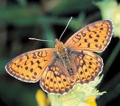 |
| Etsy | ButterflyBugz - Etsy | 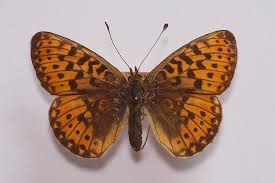 |
| Brenthis daphne. Russian Far East, Southern Prmorye, Vityaz bay. 20.06.2025 | 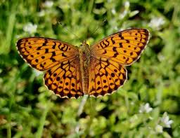 | |
| Of this weeks Favourites I saw all three but only managed to photograph one! Feel free to post your images below or use the links to visit the official website and post | 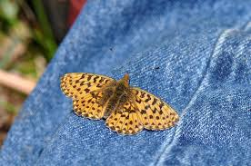 | |
| iNaturalist | Lesser Marbled Fritillary (Brenthis ino) · iNaturalist | 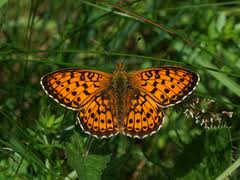 |
| Field Museum | Media | Zoological Collections |  |
| British Butterfly Aberrations | High Brown Fritillary (Argynnis adippe) butterfly aberrations | 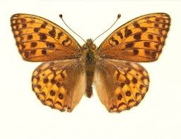 |
| Pyrgus.de | European Lepidoptera and their ecology: Boloria euphrosyne | 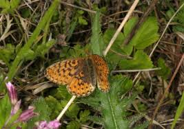 |
| Barcode of Life Data System (BOLD) | BOLD Systems: Taxonomy Browser - Argynnis auresiana {species} | 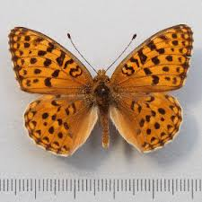 |
| Insecta.pro | Photo #41486: Brenthis hecate | 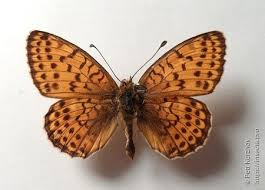 |
| Jeff Pippen | Northwestern Fritillary (Argynnis hesperis) | 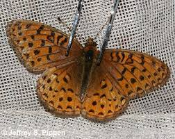 |
| Wikipedia | Nymphalidae - Wikipedia | 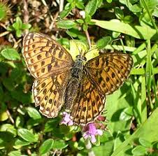 |
| British Butterfly Aberrations | Pearl-bordered Fritillary (Boloria euphrosyne) butterfly aberrations | 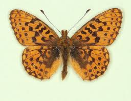 |
| Nebraska Lepidoptera | Species Page: Northwestern Fritillary (Argynnis hesperis) | Nebraska Lepidoptera: A Guide to Nebraska Butterflies and Moths | 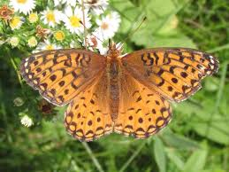 |
| Any tips for finding pearl-bordered fritillaries in New Forest? | 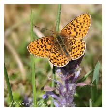 | |
| Cornwall Butterfly Conservation | The Butterfly Observer | 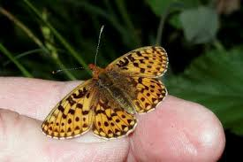 |
| Barcode of Life Data System (BOLD) | BOLD Systems: Taxonomy Browser - Argynnis {genus} | 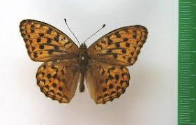 |
| eBay | Nymphalidae, Brenthis hecate transcaucasica, male, A1-/A2-, Azerbaijan | eBay | 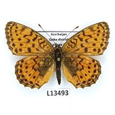 |
| Pyrgus.de | European Lepidoptera and their ecology: Boloria titania | 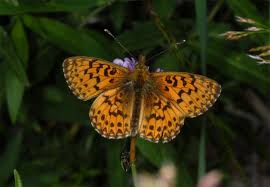 |
| British Butterfly Aberrations | Small Pearl-bordered Fritillary (Boloria selene) butterfly aberrations | 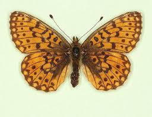 |
| iNaturalist | Niobe fritillary (Argynnis niobe) · iNaturalist | 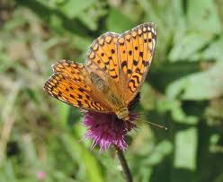 |
| Pyrgus.de | European Lepidoptera and their ecology: Brenthis ino | 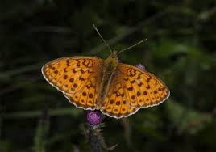 |
| YouTube | Nature Garden - Butterflies and Bee Flies - YouTube | 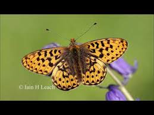 |
| Blogger.com | Northwest Butterflies: Lesser (but not least) Fritillaries | 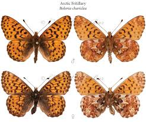 |
| Can someone confirm or deny the white flying insect? | 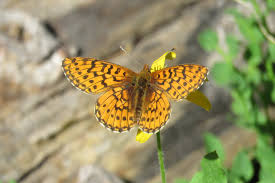 | |
| A lovely pair of what I believe to be Small Pearl Bordered Frittillary 🦋 | 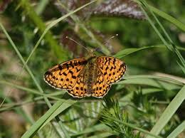 | |
| Boloria chariclea butleri Butler's Fritillary Dalton Hwy. Southside of Brooks Range Chandalar Shelf 2567' June 20, 2021 Arctic Circle Alaska Hibernates as larva with a development period of two years Very wary | 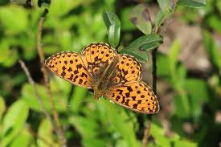 | |
| World of Butterflies and Moths | Brenthis hecate TWIN-SPOT FRITILLARY - World of Butterflies and Moths |  |
| Butterfly Conservation Armenia | Clossiana euphrosyne - Butterfly Conservation Armenia | 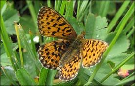 |
| 20/5: a) Standing Hat (New Forest) - PB Fritillary, Brimstone, S Wood b) Acres Down (New Forest) - Brimstone, Holly Blue, Orange tip | 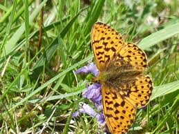 | |
| Butterflies and Moths of North America | Butterfly, Moth, and Caterpillar Photographs from California | Butterflies and Moths of North America | 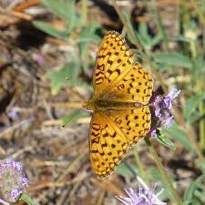 |
| Naturetrek | France - Butterflies of the Pyrenees - Naturetrek | 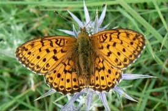 |
| The University of Edinburgh | Natural History Collections: Dark Green Fritillary | 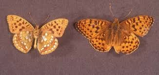 |
| Wikipedia | Fil:Boloria freija Kurjenrahka.jpg – Wikipedia | 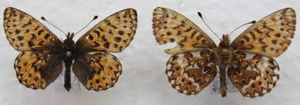 |
| Flickr | Braunfleckiger Perlmutterfalter (Boloria selene), NGID9135… | Flickr | 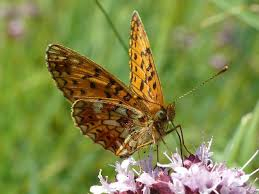 |
| In August, the Weaver's Fritillary (Boloria dia) is a classic butterfly in my garden. 🙂 (Loire, France) | 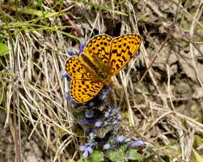 | |
| wildlifeinsight.com | What's the difference between Pearl-bordered Fritillary and Small Pearl-bordered Fritillary butterflies? | Wildlife Insight | 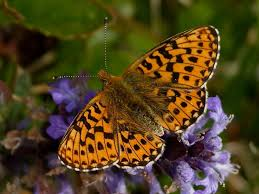 |
| sciencephotogallery.com | Pearl-bordered Fritillary by Bob Gibbons / Science Photo Library | 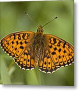 |
| | WA.gov | Title Agenda Item # | 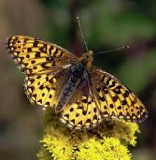 |
| Sorry that the photo is not the best but had to take it quite quickly whilst on the Butterfly Trail at the Wyre Forest yesterday. Is it a Pearl bordered Fritillary? A | ||
| The advantage of taking your grandchildren with you when spotting - sharp eyes meant they saw the first four Pearl Bordered Fritillaries today. None on a colder day yesterday but these beauties | ||
| Butterflies and Moths of North America | Arctic Fritillary Boloria chariclea (Schneider, 1794) | Butterflies and Moths of North America | |
| Science Source | Fritillary Butterfly Coffee Mug by Larry West - Science Source Prints | |
| Bumblebee.org | Nymphalidae 2 | |
| A couple from the Goyt Valley this afternoon. Small tortoiseshell, a male dark green fritillary, a couple of gatekeepers, and finally a small heath nectaring on a flower which I don't see | ||
| New York Post | Photographer takes remarkable images of endangered butterfly flying off flower | New York Post |
{kind=link}